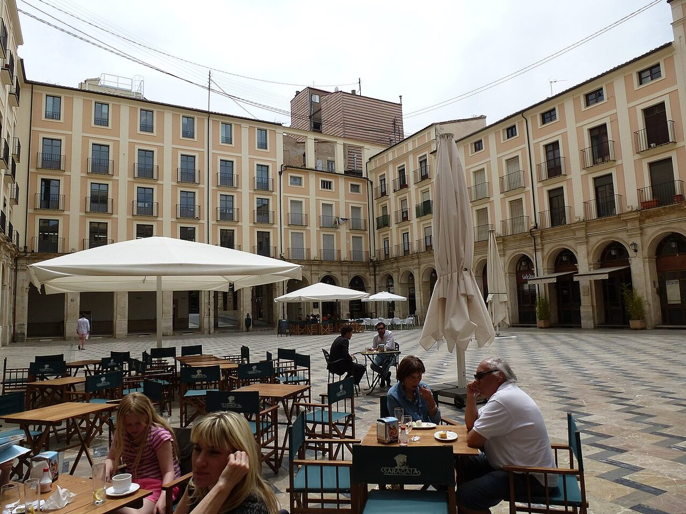

Contra su provincia · Elecciones: 2004-2023
Alcoi, a contracorriente en Alicante
Alcoi, la ciudad que vota a la izquierda en la provincia de Alicante: el PSOE le sacó 10,7 puntos al PP
Por Nacho G. del Álamo ·
El 23J, el PSOE ganó en Alcoi con el 38,9 %, frente al 28,2 % del PP. En el conjunto de la provincia de Alicante ganó el PP, con 4,8 puntos de ventaja. Ningún municipio alicantino de más de 20.000 habitantes vota tan a la izquierda. La izquierda estatal sacó allí el 56,7 %, más que en 2004 (52,6 %), mientras en la provincia bajaba.
Dato: verificable y reproducible
La pregunta: ¿Cuánto se aparta Alcoi del voto de su provincia, y desde cuándo?
La excepción de la provincia
DatoDe los 26 municipios alicantinos de más de 20.000 habitantes, el PSOE ganó el 23J en 7. En ninguno con tanta ventaja como en Alcoi: 10,7 puntos sobre el PP. Le siguen, de lejos, Elda (+3,3) y Dénia (+3,3).
DatoLa izquierda estatal (PSOE más el espacio de Sumar, que en la Comunitat Valenciana incluye a Compromís) sacó en Alcoi el 56,7 %. En la provincia, el 44,8 %.
Más que lo que predice su perfil
DatoCon 59.866 habitantes, una renta de 19.276 euros y un paro del 19,8 % en 2021, el modelo de esta serie predice para Alcoi un 50,9 % de voto a PP, Vox y Cs. Sacaron el 41,0 %: 9,9 puntos menos, la 36.ª mayor diferencia a la baja de España entre los municipios de más de 10.000 habitantes.
Veinte años a contracorriente
DatoEn 2004, la izquierda estatal sacaba el 52,6 % en Alcoi y el 46,0 % en la provincia: una distancia de 6,6 puntos. En 2023, la distancia era de 11,9.
DatoEn 2015 y 2016, la candidatura del espacio de Podemos y Compromís fue la más votada en Alcoi, con el 35,8 % y el 31,1 %. El PP solo ganó en 2011, con el 43,3 %.
PatrónLa derecha, en cambio, se ha movido poco: entre el 39,2 % y el 43,3 % en las ocho generales. Lo que ha cambiado es el reparto dentro de la izquierda.
En el ayuntamiento
DatoEn las municipales de mayo de 2023 el PSOE fue la lista más votada con el 29,8 %, casi empatado con el PP (29,6 %). Compromís y el resto del espacio de Sumar sacaron el 24,7 %.
Sobre el terreno
DatoEn julio de 1873 los obreros del textil y del papel de Alcoi fueron a la huelga general y protagonizaron la llamada Revolución del Petróleo, en la que se hicieron con el ayuntamiento durante unos días. Fuentes: 1, 2
DatoLos Moros i Cristians de Alcoi, en honor de Sant Jordi, conmemoran la batalla de 1276 contra el caudillo Al-Azraq y son fiesta de Interés Turístico Internacional desde 1980. Fuentes: 1, 2
Lo que no sabemos
- HipótesisPor qué. Alcoi tiene una larga historia industrial y obrera (ver «Sobre el terreno»), y es la explicación que más se repite; esta pieza no ha encontrado dos fuentes independientes que la relacionen con el voto actual.
Dato: verificable y reproducible. Patrón: relación descriptiva, sin causa. Hipótesis: explicación posible que aún no tiene dos fuentes independientes.
Los datos
| Elección | PSOE Alcoi | PP Alcoi | Sumar y afines Alcoi | Izquierda Alcoi | Izquierda provincia | Derecha Alcoi | Derecha provincia |
|---|---|---|---|---|---|---|---|
| 2004 | 46,0 | 40,4 | 6,7 | 52,6 | 46,0 | 40,4 | 48,9 |
| 2008 | 49,6 | 41,3 | 3,4 | 53,0 | 43,2 | 41,3 | 52,6 |
| 2011 | 32,5 | 43,3 | 15,1 | 47,5 | 36,6 | 43,3 | 55,2 |
| 2015 | 21,8 | 23,5 | 35,8 | 57,6 | 46,9 | 39,2 | 50,3 |
| 2016 | 22,8 | 27,8 | 31,1 | 53,9 | 43,5 | 42,9 | 53,8 |
| abr. 2019 | 34,3 | 13,2 | 23,1 | 57,4 | 45,5 | 39,3 | 51,5 |
| nov. 2019 | 34,3 | 18,2 | 22,7 | 57,0 | 45,1 | 39,7 | 52,2 |
| 2023 | 38,9 | 28,2 | 17,8 | 56,7 | 44,8 | 41,0 | 53,0 |
Método y fuentes
- Qué se compara
- Alcoi frente a la provincia de Alicante y a sus 26 municipios de más de 20.000 habitantes, y frente al modelo municipal de esta serie.
- Límites
- «Izquierda» suma el PSOE y el espacio de IU, Podemos, Compromís y Sumar; «derecha», PP, Vox y Cs. El modelo no es una explicación.
- Metodología completa
- Cómo se calculan los porcentajes, el modelo, los gemelos y los escaños
- Fuentes
- Ministerio del Interior, resultados electorales por mesa (Infoelectoral). Congreso 2004-2023 vía pollspaindata, commit ee5ecda; municipales 2007-2023 de los ficheros de Infoelectoral
- INE, Atlas de Distribución de Renta de los Hogares 2023 (renta, edad, población), vía ineAtlas.data
- INE, Censo de Población y Viviendas 2021 (estudios, paro, extranjeros)
- Autoría
- Nacho G. del Álamo
- Revisión de datos y texto
- Nacho G. del Álamo, 7 de octubre de 2026
- Publicado · actualizado
- 7 de octubre de 2026 · 7 de octubre de 2026
- Correcciones
- Ninguna. Historial del Atlas